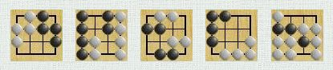

Drago - Resources
Drago - Resources
This page gathers some resources related to Drago. These resources are for the time being:
- wood texture images
- a html to sgf converter for goproblems files
- a 4x4 problem collection from goproblems
Wood textures

Download wood textures images. Note that these images are installed with Drago.
HTML to SGF converter for goproblems problem files
The goproblems site offers a big collection of go problems of various genres (life and death, tesuji, ...) and difficulties (easy, medium, hard). These problems are entered by users and can be replayed on line. They can also be downloaded in html or sgf formats. However, the sgf files don't keep the genre and difficulty information. gopb2sgf.pl is a Perl script enabling to convert the html problem files to sgf while keeping the genre and difficulty attributes. This enables to dispatch the goproblems collection in sgf collections:
- by genre
- by difficulty
- by genre and difficulty
The gopb2sgf.pl script enables also to gather the problems where a given string appears and to detect some syntax errors (unbalanced parentheses, unbalanced brackets, invalid property names). It can even delete some annoying and useless CR marks.
Download the gopb2sgf.pl script
4x4 problems from goproblems.com
The goproblems collection contains an amazing serie of 34 4x4 problems:

It is possible with the gopb2sgf.pl script to gather them in a single 4x4 collection file, available here. Actually, a lot of "RIGHT" flags have been added to provide an identified correct solution from the beginning of each problem.